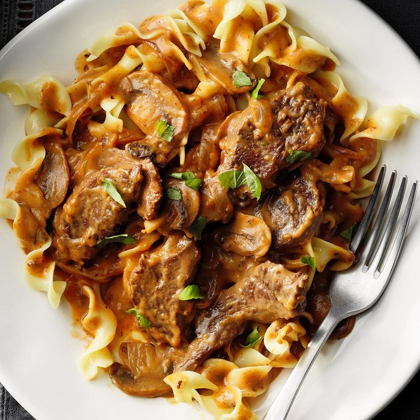

Simple Beef Stroganoff

Ever wanted to travel to Russia, but
you can barely pay your own bills? Well,
too bad, I can't help you with that,
but if you're looking for a taste of
the unique flavours of imperial Russia,
I have what you need.
Ingredients
- 1 package egg noodles
- 1 pound ground beef
- 1 can fat-free condensed cream of mushroom soup
- 1 tablespoon garlic powder
- ½ cup sour cream
- salt and ground black pepper to taste
Instructions
- Gather all the ingridients
- Sauté ground beef in a large skillet over
medium heat until browned and crumbly;
5 to 10 minutes.
- At the same time, fill a large pot with
lightly salted water and bring to a rapid
boil. Cook egg noodles at a boil until
tender yet firm to the bite, 7 to 9 minutes.
Drain and set aside.
- Drain and discard any fat from the cooked
beef. Stir condensed soup and garlic powder
into the beef. Simmer for 10 minutes, stirring
occasionally.
- Remove beef from the heat. Add egg noodles
and stir to combine. Stir in sour cream and
season with salt and pepper.
- Serve hot and enjoy!